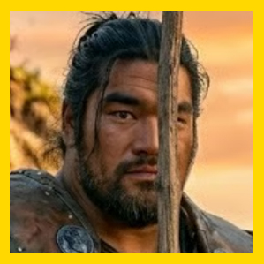

GuerreroGlunt
El Gigante de Corazón de Cristal • Guerrero Protector (Tanque)
"Padre dijo que me quedara. Glunt se queda. Glunt cuidará de los pequeños hasta que el sol vuelva a salir."
1. Hitos Decisivos de Glunt
Encadenado en la orilla junto a sus compañeros, usó su descomunal fuerza bruta para reventar los grilletes y liderar el choque frontal contra el negrero Hafkris.
En la cripta de Zenopus, contrajo una ponzoña mágica oscura que comenzó a trepar por su pierna. Aguantó el dolor sin quejarse para no asustar a los demás.
En el templo del río, destruyó de un tremendo golpe de maza a la estatua animada del minotauro. Al beber de la fuente de Kanatsu-mi, la mancha negra retrocedió: ¡Glunt está curado!
El Muro Protector y la Deuda de Vida
Habiendo sobrevivido a la plaga de Zenopus gracias a Kaz y las aguas sagradas, Glunt siente que su segunda oportunidad en la vida pertenece a sus amigos.
No entiende de política ni de conspiraciones en Elken, pero sabe dos verdades absolutas: nadie tocará a Sakura mientras él respire, y si Kazrim dice que hay un templo enano en las montañas, él abrirá el camino a mazazos.
2. Resumen Exprés de la Campaña
Naufragó en Viladel (Acto I), cruzó las nieblas en el Rimed Mallow (Acto II), salvó a los refugiados y asaltó la torre maldita en Elken donde casi muere (Acto III), y marchó a las cumbres hasta beber de las aguas de vida de Kanatsu-mi en Milborne (Acto IV).
3. Vínculos con los Koonies
4. Consejos de Roleplay y Combate
En Combate: Eres el Tanque Colosal (Fuerza 18, Constitución 18, 14 PG). Tu trabajo es ponerte delante en pasillos estrechos, provocar a los enemigos y bloquear proyectiles para que Sakura lance sus hechizos con calma.
En Roleplay: Habla en tercera persona con ternura y franqueza ("Glunt tiene hambre", "Glunt cuidará la puerta"). Tu inocencia contrasta con la crueldad de Thir, convirtiéndote en el corazón moral del grupo.